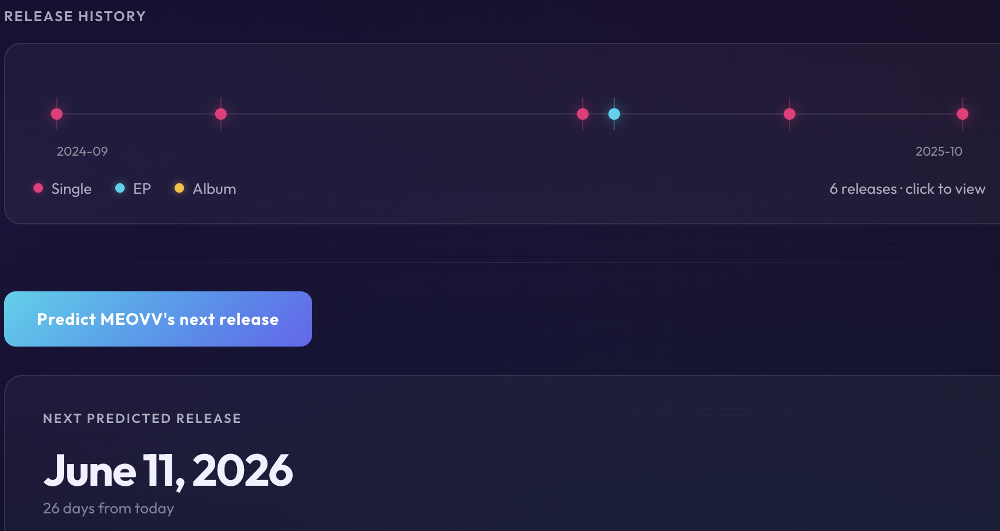
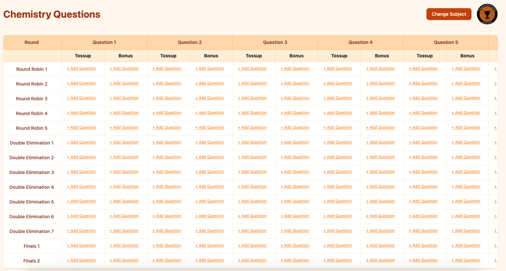
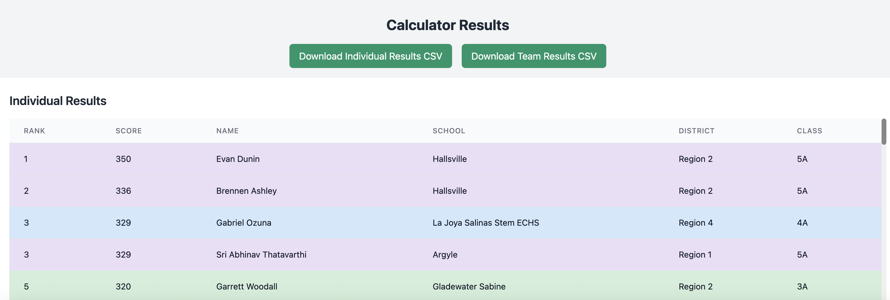
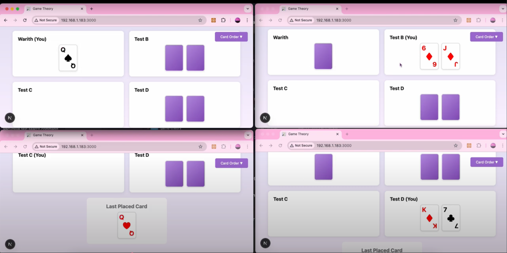

Hi, I'm Warith! I graduated from Allen HS and am currently studying CS and Math at UT Austin. During high school, my main extracurriculars were UIL Academics (two individual golds senior year!) and competitive programming (which I've carried into college via Codeforces and UTPC). My main interests are in cryptography and numerical analysis (as you can tell I'm a huge nerd when it comes to working with numbers).
Outside of academics, I follow soccer and cricket a ton! I also play a lot of TETR.IO (peaked Top 1.9K globally), and listen to a lot of K-pop.
TBA!
CS 311 (Discrete Mathematics): weekly office hours, discussion sections, grading problem sets and exams.
Designed Tines workflow for automated vulnerability detection; formatted phishing reports for City of Austin.
Write physics tests for hundreds of students, including the TMSCA state test tied to scholarship eligibility.
Built pipeline identifying differentially expressed genes in sister salamander species; identified 20 key proteins.
Contributed to UT Registration Plus (60,000+ users), focusing on calendar UI and logic.
Mentored K–12 students in math, documenting daily progress for parents.
Developed Python scripts under Dr. Chris Davis using NLTK to analyze linguistic data from webpages.
In addition to work experience, I actively write for academic competitions:

Web app predicting K-pop album release dates — ML script analyzes scraped historical records to visualize trends.
View Repository →
Website storing Science Bowl questions in Atlas DB, auto-compiling them into LaTeX packets. Replaces a fully manual process.
View Repository →
Flask app using requests + multi-threading to display statewide UIL results, with CSV export support.
View Repository →
Web version of a card game: sort distributed cards without verbal communication that reveals card values.
View Repository →